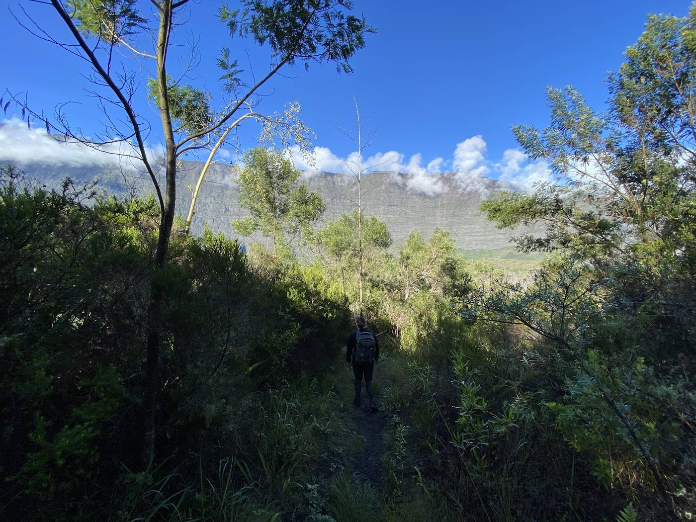
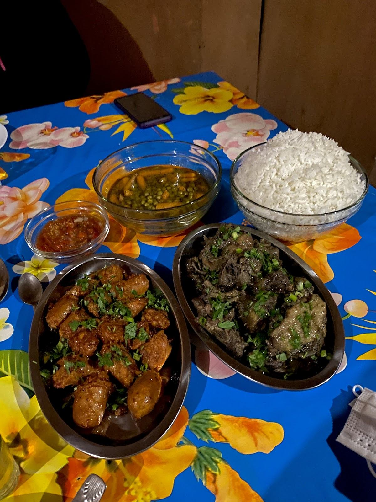

Gîte de randonnée · Îlet Cernot, cirque de Mafate
À l’Îlet Cernot, à 30 minutes de marche de La Nouvelle, Marie-Hélène Cernot accueille les randonneurs dans deux gîtes au calme, au cœur de Mafate.

L’essentiel
Une demi-heure de sentier sépare l’Îlet Cernot de La Nouvelle : le soir, seul le silence de Mafate.
Un gîte de 5 places et un gîte de 8 places, chacun avec sa salle de bain et ses toilettes.
Les repas se prennent un peu plus bas, chez Marie-Hélène : une cuisine créole maison que les randonneurs citent avis après avis.
Les voyageurs saluent l’eau chaude, la literie confortable et la propreté des gîtes.
Le gîte en images
Venir à l’Îlet Cernot
Mafate se rejoint uniquement à pied. Le gîte se trouve à l’Îlet Cernot, à environ 30 minutes de marche de La Nouvelle : suivez l’indication « Îlet Cernot » depuis l’îlet, et prévoyez d’arriver avant la nuit.
Équipements
13 personnes · 1 gîte de 5 places · 1 gîte de 8 places en dortoir · salle de bain et toilettes dans chaque gîte.
Les randonneurs retiennent la douche chaude, les couvertures pour les nuits fraîches et les prises électriques dans les chambres.
Ils en parlent
Les randonneurs retiennent l’accueil de Marie-Hélène, le calme de l’îlet, le repas maison et la douche chaude.
« … Nous avons eu la chance d’avoir un gîte uniquement pour nous, avec les sanitaires privés, donc c’était très pratique (douche chaude). Nous avons été accueillis avec le café suivi du repas à 19 h. En parlant du repas, ce dernier était tout simplement excellent. … »
« Nous avons adoré notre séjour dans ce gîte, un véritable moment magique, hors du temps, au cœur de Mafate. Notre petite chambre était parfaite, avec ses sanitaires privatifs … »
« Repas excellent, dortoir bien équipés, gérants très sympathiques. Cela vaut clairement la marche pour s’y rendre ! »
« Un grand merci à Mme Cernot pour son accueil chaleureux et son sens de l’hospitalité. Tout était parfait : les repas sont délicieux et la literie est très confortable. Certes, l’accès se mérite un peu, mais cette belle découverte vaut amplement le déplacement. »
« Deuxième fois que nous séjournons chez Mme Cernot … Le repas était délicieux, avec un choix entre deux plats, ce qui est appréciable. Le petit-déjeuner était également agréable, notamment avec les bananes la cour. … »
« Un petit coin tranquille et magnifique, un repas copieux et absolument délicieux et une chambre confortable avec une douche bien chaude. »
Extraits d’avis publiés sur Google. Lire tous les avis · Voir la fiche de l’Office de tourisme de l’Ouest

Les repas
Le soir, on descend un peu plus bas, chez Marie-Hélène, pour un repas créole fait maison : caris, rougail, grains et gratin reviennent souvent dans les souvenirs des marcheurs.
Le matin, un petit-déjeuner avant de reprendre le sentier. Pensez à signaler un régime particulier avec vos dates.
Autour du gîte
Infos pratiques
À pied, à 30 minutes de La Nouvelle ; arrivée de préférence avant la nuit
Dîner et petit-déjeuner chez Marie-Hélène, à réserver avec la nuit
Jusqu’à 13 personnes, en gîte de 5 ou en dortoir de 8
Salle de bain et toilettes dans chaque gîte
À préciser avec Marie-Hélène avant votre venue
Sur demande, selon vos dates
Collectée par l’hôte pour les réservations en direct
Confirmation écrite et état descriptif remis à chaque réservation directe
Gîte non accessible aux personnes à mobilité réduite
Réserver en direct
Indiquez la nuit de votre passage à l’Îlet Cernot et le nombre de randonneurs : Marie-Hélène vous répond personnellement avec le tarif.
Par e-mail : écrire à Marie-Hélène